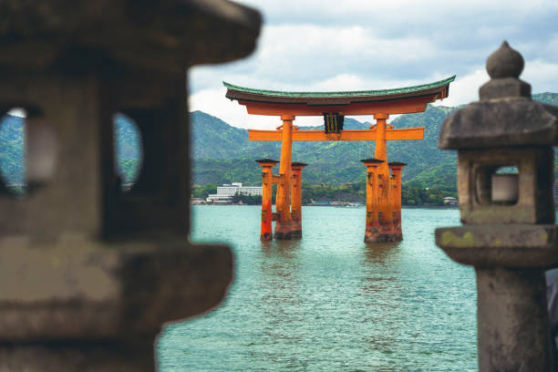
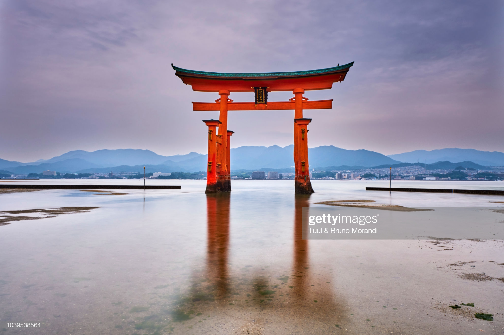
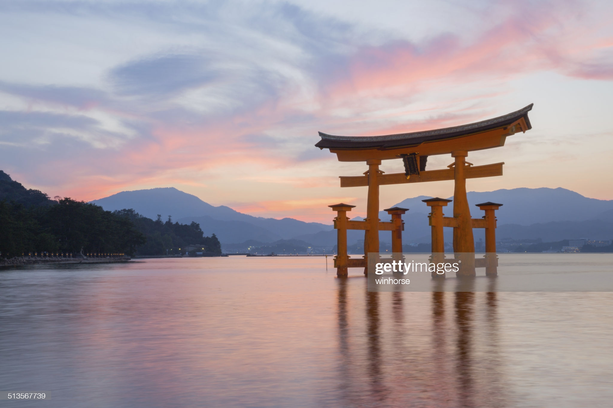
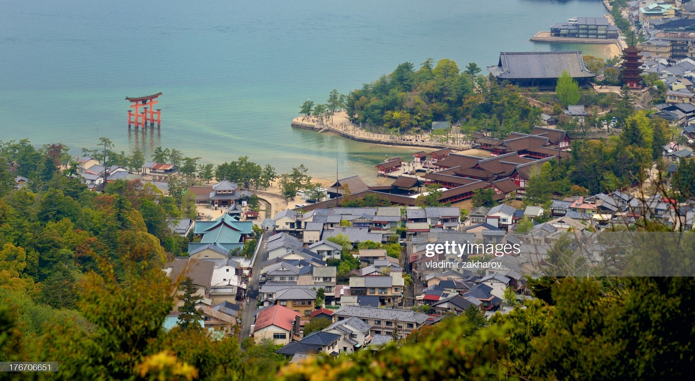

Itsukushima
In this page, you will get to know why I love Itsukushima in Japan.
Introduction
Itsukushima (厳島) is an island in the western part of the Inland Sea of Japan, located in the northwest of Hiroshima Bay. It is popularly known as Miyajima (宮島), which in Japanese means "Shrine Island". The island is one of Hayashi Gahō's Three Views of Japan specified in 1643.
Itsukushima is part of the city of Hatsukaichi in Hiroshima Prefecture. The island was part of the former town of Miyajima before the 2005 merger with Hatsukaichi.
Itsukushima is famous for the Itsukushima Shrine, a UNESCO World Heritage Site. According to records, the shrine was established in the time of Empress Suiko. The warrior-courtier Taira no Kiyomori gave the shrine its present form. In 1555, Mōri Motonari defeated Sue Harukata at the Battle of Miyajima. Toyotomi Hideyoshi built a large building, the Senjō-kaku, on a hill above the shrine.
Itsukushima has a number of temples, including Toyokuni Shrine with a five-storied pagoda,[3] and Daiganji Temple - one of the three most famous Benzaiten temples of Japan. The island is also famous for its upper hill side cherry blossoms and maple leaf autumn foliage.
Photo Album
“Itsukushima”



More sights in Japan
"Mount Fuji"

Without a doubt Japan's most recognizable landmark, majestic Mount Fuji (Fuji-san) is also the country's highest mountain peak. Towering 3,776 meters over an otherwise largely flat landscape to the south and east, this majestic and fabled mountain is tall enough to be seen from Tokyo, more than 100 kilometers away.
Mount Fuji has for centuries been celebrated in art and literature and is now considered so important an icon that UNESCO recognized its world cultural significance in 2013. Part of the Fuji-Hakone-Izu National Park, Mount Fuji is climbed by more than a million people each summer as an act of pilgrimage, which culminates in watching the sunrise from its summit.
"Imperial Tokyo"

Tokyo's most famous landmark, the Imperial Palace with its beautiful 17th-century parks surrounded by walls and moats, is a must-see when visiting the nation's capital. Don't be put off by the fact that the majority of the palace is closed to the public (it's still in use by the Imperial family), as there is still enough to see simply by strolling the grounds.
In addition to the many fine views of the palace from numerous points in the surrounding parkland, visitors are permitted into the East Higashi-Gyoen Garden and other areas that are opened to the public as part of an organized tour. One of the most romantic views is of the famous Nijubashi Bridge, or "double bridge," so named for its watery reflection.
"Hiroshima Peace Memorial Park"

While little needs to be said here of the horrors of the atomic bombing of Hiroshima in August 1945, much can be said of the incredible efforts this vibrant city has made to commemorate the many victims of the world's first nuclear attack. Perhaps even more importantly, Hiroshima has become a symbol of lasting peace.
Visited by more than a million people each year, many from overseas, Hiroshima Peace Memorial Park (Hiroshima Heiwa Kinen Kōen) lies at the epicenter of the atomic blast in what was once a bustling part of the city. Here you'll find a number of important monuments, memorials, and museums relating to the events of that fateful day.